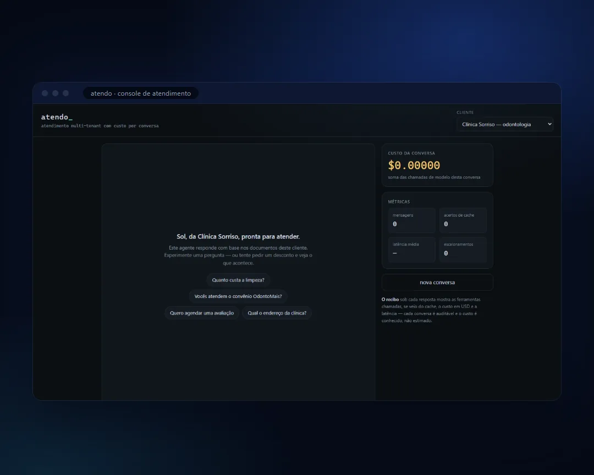

01Código aberto
O problemaCliente pergunta fora do horário e a resposta demora.
Atendo
Agente que atende clientes por WhatsApp e pelo site, com o custo de cada conversa medido.
- Python
- FastAPI
- pgvector
- Claude API

Cliente pergunta fora do horário e a resposta demora.
Construí um agente que responde por WhatsApp e pelo site usando os documentos da empresa, marca horário, registra interessados e passa para um humano o que não deve responder sozinho. Cada resposta sai com o custo da conversa medido — auditável, não estimado.
- Responde com base nos documentos da própria empresa, buscados no PostgreSQL com pgvector.
- Marca horário e registra quem demonstrou interesse.
- Passa para um humano o que não deve responder sozinho.
- Mede o custo de cada conversa, resposta por resposta.
- Python
- FastAPI
- PostgreSQL + pgvector
- Redis
- Docker
- Claude API
Código aberto no GitHub
Ver o código no GitHub